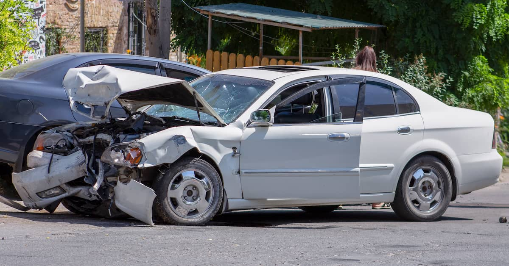

Accidents Happen...

Accidents are something no one really prepares for although everyone should as statistics show that during the course of the average driver’s lifetime they will be involved in 3 to 4 of them. So a little preventive medicine could go a long way.
Any accident, even a minor fender bender, can rattle the most even-keeled of us. Let’s talk about what to keep in mind and what to do at the accident scene. You may even want to print this list out and keep it in your glove compartment.
Accident Tips
- Check to see if there are any physical injuries. If there are, don’t think twice, call 911 and call the local police.
- Even though you may not feel hurt, don’t take chances, get checked out at a local hospital. It’s for your own protection as sometimes the symptoms of injury aren’t obvious to anyone except a doctor.
- Make sure to get all the information from the other party including driver’s license, license plate number, vehicle registration, vehicle id (VIN#) and the other party’s insurance company name.
- If you have your phone or a camera make sure to take pictures of the damaged areas of both vehicles, any objects involved (such as guard rails, telephone poles, or buildings) and the accident scene. Especially skid marks.
- Also, take pictures of the location including street signs and other identifying information or landmarks if possible.
- Fill out a police accident report immediately, keep a copy for yourself and submit it to your insurance company.
- If there are witness try to get names and phone number and if possible a statement from them, preferably written or recorded on your cell phone, at the scene as to what they saw happen.
- If the police are involved ask them if anyone is going be cited.
- Report the accident to you insurance company immediately.
- If your vehicle needs to be towed, tell the towing company where you want your car taken to. Remember, the insurance company usually pays for the towing.
- Even though it’s hard, try to remain calm.
- After you get home go to your computer and google “What should I do after an accident in Massachusetts” and if you find something you didn’t take care of at the scene, don’t wait, take care of it right away.
It may seem devastating at the time but always keep in mind that a car can be fixed. It’s not the end of the world. A professional, licensed repair shop, like AV Repair, will make your car as good as new. We do it all the time.